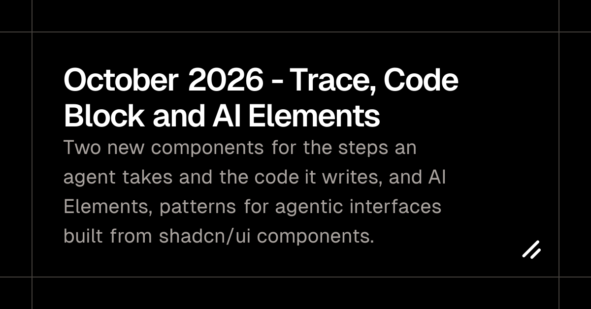
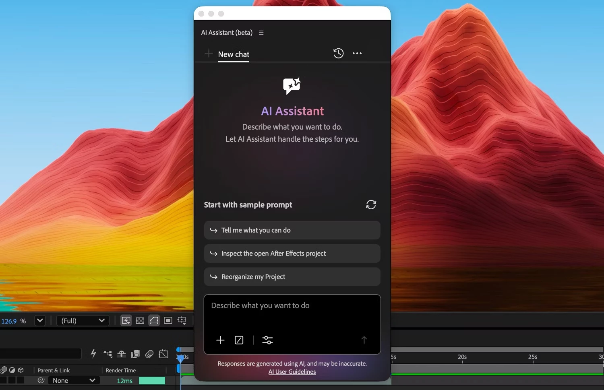
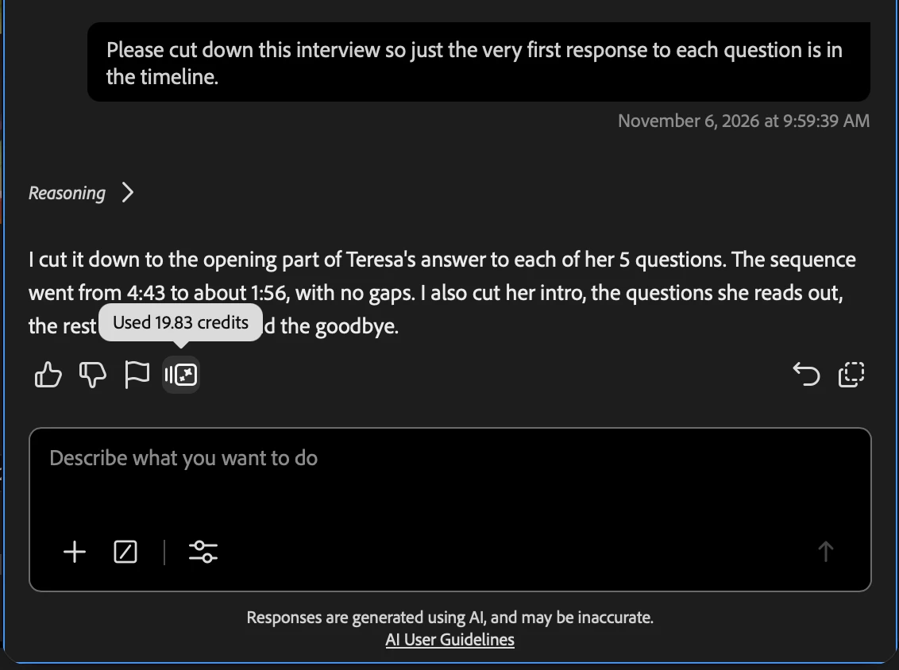
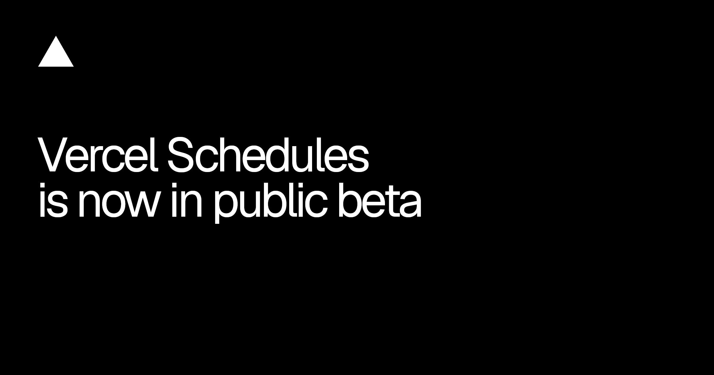
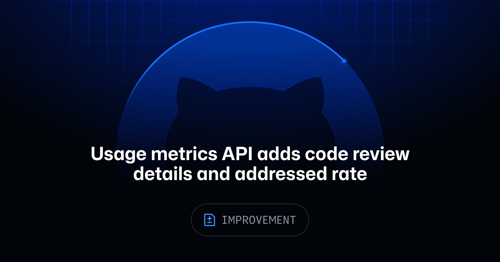
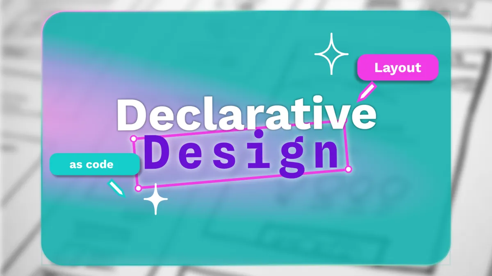
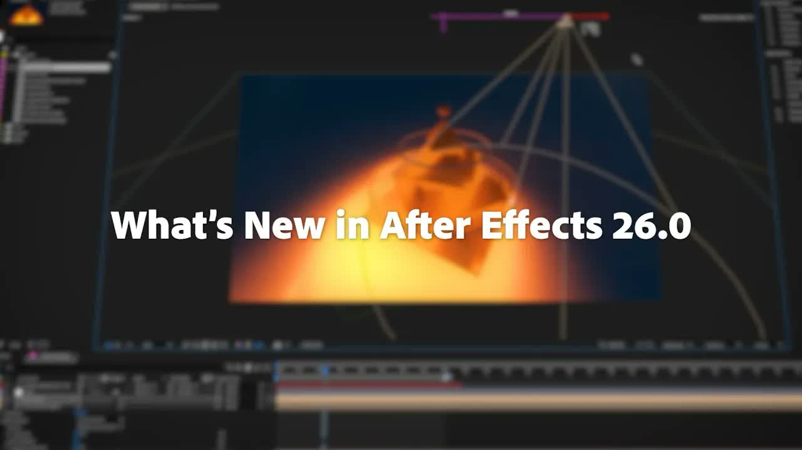

这两天的更新终于不只谈“能不能做”，开始交代 Agent 做事时会留下什么：步骤、代码、工具调用、credit、权限和失败记录。shadcn 把 trace 做成组件，Adobe 把每次回答的 credits 摆到界面上，GitHub 连“指标为什么缺一块”都补了字段。
好消息是，Agent UI 正从一只会冒字的气泡，长成一套能查账的工作界面。坏消息也很直接：账单常常要做完才看见，权限默认值还跟合同类型走。把这些边界藏掉，产品越像魔法，采购和交付越容易翻车。

shadcn 新增 Trace 和 Code Block：一个放 Agent 在一轮对话里走过的步骤，一个放这些步骤生成的代码、命令和输出。配套的 AI Elements 有 21 套模式，从 Reasoning、Tool、Plan 到 Subagent；不是再装一个黑盒包，而是把代码复制进自己的项目。
这套东西真正补的是“中间发生了什么”。聊天气泡只能证明 Agent 说过话，Trace 才能让人看见它卡在哪一步、调用了什么。旧的 AI SDK Elements 暂时不用急着迁，已复制到项目里的组件不会停工；新页面给了迁移 prompt，并尽量保留 export 名和 props。

After Effects 27.0 已开始分批推送。首批清单包括 AI Assistant、用 precomp / solid / 图像 / 视频给 3D 物体做材质、给 3D 文字和形状挂 Substance 材质、把 Illustrator 文字导成可编辑文字层、Contour Paint，以及改过的 Auto-Save；官方还写了 50 多项修复。
完整 release notes 要到 11 月 10 日 Adobe MAX 才发，现在最容易写过头。AI Assistant 还没实测，先不替它保证会整理工程、修 expression 或搭 comp；反倒是 Illustrator 文字保留字体、位置、样式和 variable font 这件小事，更像真正在省返工。

Premiere beta 的 AI Assistant 取消日限额和周限额，改为消耗账号里的 Firefly credits；每次回答下面会显示本轮用了多少。问题是只能事后看，官方在评论里确认：请求要用哪些工具、工程有多复杂都影响消耗，目前无法预估。
同一天 Adobe 还给企业管理员补了 Kling 与 Seedance 的独立开关https://community.adobe.com/announcements-623/manage-access-to-kling-and-seedance-partner-models-for-creative-cloud-teams-and-enterprise-1654590。合资格套餐沿用组织现有 credits，不另买包；VIP 合同下不少套餐默认开启，ETLA 的 Edition 4/5 默认关闭。设计团队别只看模型列表，先让管理员把“谁能用、默认开不开、花哪份 credits”抄进采购表。
Vercel AI Gateway 现在能把 DeepSeek Search 和 Fetch 交给任何支持 tool calling 的模型，不需要单独的 DeepSeek 账号。Search 返回标题、URL 和摘要，Fetch 把页面取成 Markdown；AI SDK v6 要 6.0.321 以上，v7 要 7.0.160 以上。
价钱写得够清楚：Search 和 Fetch 各是每 1000 次计费请求 0.75 美元，失败、超时和空结果不收工具费，模型 token 另算。这个规则适合直接画进 trace：用户要分得清“搜了一次”“读了一页”和“模型想了多久”是三笔不同的成本。
Token Pass 原本是 Pro 团队每月 30 美元换 80 美元指定模型额度。现在标准 API key、OIDC token 和 fx 登录都会自动先吃这份额度，不必再为 Token Pass 单开一把 key。
但用完后的姿势不一样：标准 key 和 OIDC 会继续扣团队的 AI Gateway credits，Token Pass 专用 key 会原地停到下个账期。前者更顺，也更容易悄悄超出心理预算。生产环境要的是 spend alert 和 hard cap，不是一句“额度自动适用”。

Vercel Schedules 在所有套餐开放 public beta，可以跑 cron，也可以只跑一次；目标能是 private Function、HTTP path 或 Queue topic，production、preview 和 custom environment 都能用。任务可以启停、手动执行，不必为了改时间再部署一遍。
对设计工程最实用的不是“做后台任务”，而是把原型的保洁也排进日程：清演示数据、重建截图、到点撤掉临时内容。昨天 Vercel 刚让新项目自动过期，今天又把任务时钟补上；临时作品终于有生命周期，不用靠某个人记得收摊。
十月这批里，margin-trim 最像马上能少写几行补丁：容器可直接吞掉首尾子元素贴边的 margin，不再追着 :first-child 和 :last-child 清场。Chrome 155、Safari 16.4 已支持，Firefox 还没有。
random() 已进 Chrome 156 和 Safari 26.2，Firefox 未跟；JPEG XL 则在 Chrome 155、Firefox 158 默认开启，Safari 17 已有支持。别把“新能力”理解成“可以无条件上线”：布局可 progressive enhancement，主图格式先留 fallback，随机排版也要守住可读性和可复现测试。
Safari Technology Preview 256 修了两个很具体的可访问性坑：content 生成的列表标记终于进 accessibility tree，VoiceOver 也能进入嵌在 role="none" / presentation iframe 里的下一层 iframe。scroll-driven animation 还修了 translate: none 的错误，并减少 timing 未变化时的 style invalidation。
这只是 Technology Preview，不是稳定版。font-palette-mix()、line-clamp 的 continue: collapse 现在适合做实验，不适合写进“全端已支持”的设计规范；但列表 marker 和嵌套 iframe 这两条，现有组件库可以先补回归用例。

GitHub 给 repository-level 报告加了 copilot_code_review：有多少评论被评估、多少被处理，可以按 severity、review tier、comment type、custom instruction / skill / MCP 等来源拆开，还能看 Copilot 首次 review 之后有没有人类再提出 change request。
这比“生成了多少条建议”接近结果，但仍不是质量分。旁边另一项更新专门标出 缺失 telemetry 和版本过旧https://github.blog/changelog/2026-11-05-usage-metrics-api-flags-telemetry-and-version-gaps/；null / 字段缺失代表数据拿不到，不是零。周报先把测量缺口单列，别拿一块漏数的 dashboard 给 Agent 发奖状。

Penpot 这篇把“声明式设计”说得很落地：不是给每个断点画一张固定稿，而是把意图写成 fr、auto、minmax()、flex-wrap 和 token 引用。Design 面板里的概念与 CSS 对齐，Inspect 能回读 CSS / HTML / SVG，token 使用 DTCG 格式。
这不是一句“设计即代码”就自动没有 handoff。真正能减少翻译的是那组规则本身：内容变长怎么办、容器多窄时换行、哪个 token 能覆盖、哪个不能。交付前挑一个导航或卡片列表，把三个截图断点改成一份约束表，效果比再画一张 768px 稿明显。

视频：YouTube 官方原片https://www.youtube.com/watch?v=WCJ73liV22U｜来源：Adobe Videohttps://www.youtube.com/@AdobeVideo｜时长：2 分 26 秒
今天选这条，不是拿旧版视频给 27.0 背书，而是看 Adobe 自己怎么拍一款工具。片子几乎没有虚构场景：蓝底大字负责切章节，After Effects 界面负责证明；可变字体、Native 3D Shape、材质库、渐变导入导出和性能改进，各自只用一个清楚的动作说完。
节奏靠 2D 字卡和 3D 结果来回换气。深色软件界面之后插一块高饱和蓝，眼睛马上知道上一件事结束了；橙色文字和材质样片再把重点拉回来。它不避讳面板、时间线和鼠标操作，反而让“功能确实能用”成为画面的可信度。少数段落信息密度偏高，但没有拿粒子和镜头运动掩盖产品。
下一条工具发布片可以直接试这套骨架：只挑三个功能，每个功能固定“动作前—一次操作—结果”三拍，中间用同一套字卡重置节奏。先录真实操作，再决定哪里需要 3D 或 typography；别先做一条漂亮片子，最后才找功能往里塞。
11 月 8 日早上回读首页与 WordPress API，没有新文章。最新列表仍停在 11 月 6 日，下面四条都已在 11 月 4–7 日登记，今天只保留去重状态，不换个说法再发一遍。
margin-trim、random() 与 JPEG XL 的 Firefox / Edge 进度，避免把实验能力写成全端默认。WCJ73liV22U；已用 9 组 storyboard、官方 1280px 封面与 Adobe 27.0 公告交叉核验。核验说明：shadcn、Adobe、Vercel、web.dev、WebKit、GitHub、Penpot、YouTube 与 Stash 官方页面于 2026-11-08 回读。正文 9 张配图原始宽度为 1132–2400px，已逐张目视检查；视频原片使用 YouTube 官方嵌入，飞书发布不使用单独视频封面块。